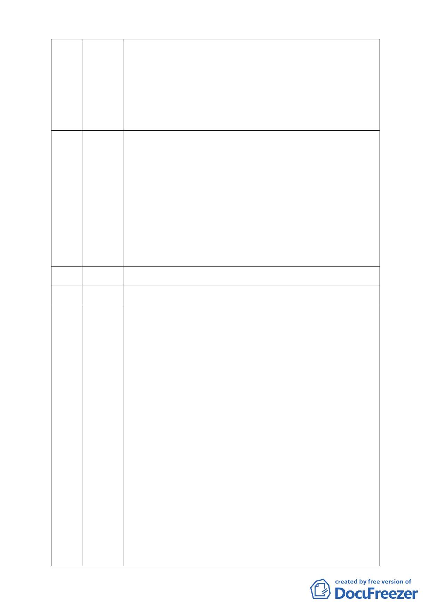

門前雪而忽略其他農民的感受。委員於會議中亦曾提及應一起規
劃，而非僅規劃南北基地。呼籲慈濟能主動撤回提案與當地農民一
起溝通協調。相信會獲得更多支持的力量，也是一項兩全其美的選
擇。慈濟使用 10 年頻率之降雨強度，且開發基地為河谷下游集水
區。惟依水保規劃第 214 條滯洪設施規劃設計原則：至少應採用
50 年以上頻率之降雨強度設計所需容量。請慈濟退回提案與上游
居民共同開發建立上下游排水系統,來保障當地居民及農民的生命
財產安全，是我們共同的心願。
依所提主要計畫書所載申請單位是慈濟基金會，辦理單位是台北市
56 張宏林 政府，惟剛才所說明是本案是市府提案，請市府再確認這是誰的提
案？本人亦重申要求採記名投票。今天蘋果日報所刊登頭版廣告是
居民一點一點累積其經費而來，所要求非個人利益也非選票。在這
邊有人或許是不知內情而被動員，惟有人卻是眛著良心在說謊。請
被動員的人弄清楚慈濟在這邊要做的事，沒有人要把慈濟趕離現在
的園區，導因是慈濟對於現狀不滿足，所以它重新提出開發案，未
來的開發構想包含學前教育設施、社區遊憩設施、醫療保健服
務、、、日常用品零售業、一般零售業等等，其中如日常用品零售
業之使用就讓人有非常大的想像空間。透過這些細部計畫也才能讓
我們清楚的了解慈濟想要做的是什麼，如果有人還在說謊的話應該
下地獄。
57 （已刪除）
58 （已刪除）
本人從投影片列舉本案違反都市計畫及違反環評規定事項如下列：
59 溫炳原 一、順向坡、谷地集水及行水區、環境敏感、破碎地形地區
二、社會福利設施使用無須變更保護區
依據臺北市土地使用分區管制規則第 75 條第 1 項第 2 款規定，保
護區依法得附條件允作為社會福利設施使用，無須辦理都市計畫保
護區變更。
三、無都市計畫法第 27 條第 1 項第 3 款之適用
本案變更保護區做為社會福利設施專區使用，既非國防發展需要又
無經濟發展效益
四、依法應實施環境影響評估
1.東湖聯外山區道路滯洪沉砂池（907m3）未列入開發範圍
2.「開發行為應實施環境影響評估細目及範圍認定標準」第四條園
區之開發第九款，位於山坡地、國家風景區或台灣沿海地區自然環
境保護計畫核定公告之一般保護區，申請開發或累積開發面積一公
頃以上者，應實施環境影響評估
3.依據「認定標準」第 31 條第 11 款「安養中心」、「老人福利機構
（包括長期照護機構、養護機構、安養機構）」之興建，若位於山
坡地之區位，且申請開發面積 1 公頃以上，即應實施環評
4.慈濟內湖園區將作為興建社會福利中心使用，不符合“開發行為
應實施環境影響評估細目及範圍認定標準”第二十三條第一項第
（六）款之適用，依法應實施環境影響評估
5.「醫療保健服務業（不含精神病院）」部分：依據「認定標準」
第 24 條第 7 款「醫療建設之開發」，位於山坡地之區位，申請開發
-6-